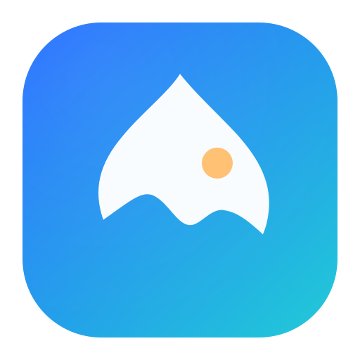
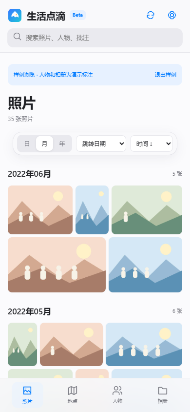
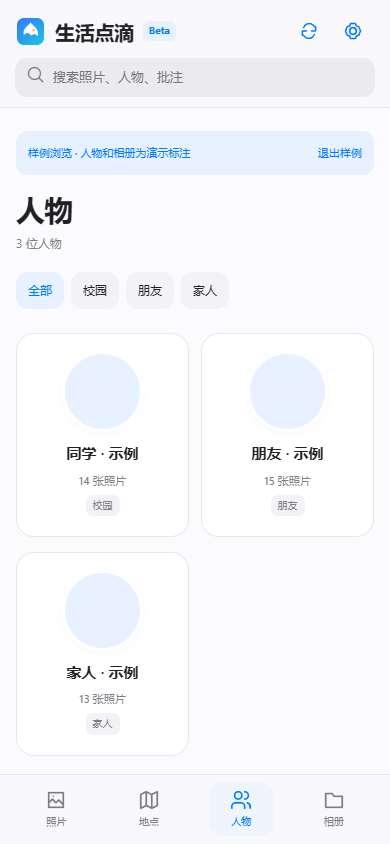
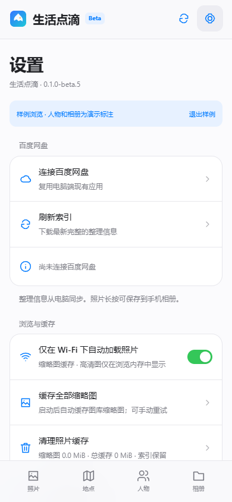

生活点滴 Android 0.1.0-beta.5手机端拉取数据教程
电脑负责整理，手机负责浏览。先发布一份索引，再让手机读取你已备份到百度网盘的照片。
编写日期：2026 年 10 月 13 日 · 适用于 Android 9 及以上 · 本文对应本次交付的 Beta APK。
两端分别登录并授权存放照片的同一个百度账号。AppKey/SecretKey 相同，访问令牌各自生成；不要把电脑的 refresh_token 复制给手机。
原照片仍通过你现有的备份流程上传。手机不会编辑整理信息，也不会上传、移动或删除网盘照片。只要网盘已经收到索引和原片，电脑关机后手机仍能读取。
1先准备好四项信息
| 信息 | 从哪里获得 | 怎么填写 |
|---|---|---|
| AppKey | 百度网盘开放平台 → 控制台 → 现有应用 → 应用详情 | 复制原值，电脑和手机使用同一个应用。 |
| SecretKey | 同一应用的详情页面 | 复制原值；AppKey 与 SecretKey 必须是一对。 |
| 索引目录 | 电脑端 → 设置 → 连接配置 | 例如 /apps/你的应用名称/生活点滴索引，两端完全一致。 |
| 原片目录 | 电脑端设置中的“百度网盘照片目录”，同时对照实际备份位置 | 按实际目录填写，例如 /数据备份/照片。新版会保留索引内的年/月相对目录，使用此根目录形成完整原片路径。 |
“你的应用名称”是占位符，请替换为百度控制台中真实的应用名称。百度网盘客户端里可能显示为“我的应用数据”，API 路径仍写 /apps/应用名称。
如果电脑已发布的旧索引仍写 /生活点滴，而实际原片在 /数据备份/照片，手机填写后者即可替换旧目录前缀。子目录和文件名必须保持一致；不会搜索同名照片。推荐电脑端也更新目录，以便以后发布的路径一致。
连接前必须确认目录权限和配额
- 打开 百度网盘开放平台控制台，进入已经创建的应用，确认应用状态和已开通接口；不要另建应用。
- 对照 官方《权限与配额》，确认你有读取索引目录和原片目录的授权。默认通常只包含
/apps/应用名称；填写路径、获得basic,netdiskscope 都不能自动增加目录权限。 - 若原片在
/生活点滴等应用目录以外，先确认平台是否已授予该目录访问权限。没有授权时，应先通过平台支持的方式增加目录授权；若该应用无法增加范围，可以用现有备份流程把所需原片另行备份到允许访问的应用目录，并在电脑端更新映射。不要为了连接测试删除或移动原有备份。 - 官方 2026-07-03 文档列出未审核应用的接口频控为每小时 10 次、最多 10 个授权用户。照片浏览会多次查询文件信息，这个测试配额可能很快用完。正式连续使用前需要按控制台和平台审核要求取得足够配额；缓存不能代替配额。
个人只能创建一个应用、应用最多能授权多少用户、每小时能访问多少次接口，是三个不同限制。两台设备复用一个应用不会创造第二份接口配额。实际可用权限和配额以你现有应用为准。
2在电脑端发布整理信息
- 打开电脑上的生活点滴 Beta，进入设置。确认本地照片根目录为你当前使用的目录，例如
D:\照片。 - 检查百度网盘照片目录与实际网盘原片根目录一致。软件会保留每张照片的相对路径：
本地照片：D:\照片\2022\某张照片.jpg 本地根目录：D:\照片 网盘根目录：/生活点滴 手机查找：/生活点滴/2022/某张照片.jpg
如果网盘根目录改为 /apps/应用名称/原片，手机查找的位置就是 /apps/应用名称/原片/2022/某张照片.jpg。网盘备份必须保留相对目录结构和原文件名；手机不会搜索同名文件后随便选一张。
- 在设置中找到百度网盘索引同步，点击连接百度网盘（已连接时为连接配置）。填写现有应用的 AppKey、SecretKey 和索引目录。
- 点击授权连接。系统浏览器会打开百度授权页；使用存放照片的百度账号登录，按窗口提示输入用户码并同意授权。
- 授权成功后返回相册，开启索引同步。点击同步开关旁的上传图标，立即发布当前索引。等待状态变为“已同步”。后续编辑人物、相册或批注，电脑会在停止编辑约 15 秒后尝试自动发布。
- 在百度网盘中打开索引目录，确认至少存在一份
index-日期时间-随机编号.json。例如index-20261012T143000000-a1b2c3d4.json。文件名中的时间使用 UTC，和北京时间相差 8 小时是正常的。
电脑只上传索引，不上传照片。如果照片的备份尚未完成，手机可能已能看到人物、相册和照片名称，但图片暂时加载不到。应等你原来的备份流程完成。
3安装并连接手机端
- 把本次交付的 生活点滴-安卓-0.1.0-beta.5.apk 传到手机，点击安装。系统如提示来源安装权限，按提示为你用于打开 APK 的应用开启安装权限。
- 打开生活点滴 Beta。第一次启动显示欢迎页，点击连接百度网盘；也可以点击右上角齿轮 → 连接百度网盘。
- 在安卓原生连接窗口中填写下表。SecretKey 使用密码掩码，密钥和令牌由 Android Keystore 加密保存在本机，不进入相册页面，也不会写入索引。
| 手机窗口中的字段 | 应该填写的内容 |
|---|---|
| AppKey | 电脑端使用的 AppKey。 |
| SecretKey | 同一应用的 SecretKey。 |
| 索引目录 | 与电脑连接配置完全相同，例如 /apps/应用名称/生活点滴索引。 |
| 已获百度授权的原片目录 | 与电脑“百度网盘照片目录”相同，且已获得实际目录授权。此输入框仅限制手机客户端读取范围，不会替你向百度申请权限。 |
- 点击授权连接。App 会申请独立设备授权并打开系统浏览器。手机屏幕上的授权地址可直接打开，不需要用另一台手机扫描自己屏幕上的二维码。
- 在百度页面登录与电脑相同的账号，按页面要求确认用户码并允许授权。切回生活点滴，等待提示连接成功，点击刷新索引。
- 授权超时、取消或填错密钥时，返回连接窗口重新点击授权连接。未成功前不会覆盖已保存的凭据。
手机和电脑各自取得 access_token / refresh_token。百度 refresh_token 只能使用一次，续期后必须保存新的 refresh_token；本 App 会串行处理续期。撤销授权、令牌失效或续期失败后需重新连接。
4拉取索引，开始浏览
- 连接手机 Wi-Fi。在右上角点击刷新索引图标，或进入设置 → 刷新索引。
- App 会列举索引目录，选取最新的完整快照，下载后校验长度、格式和照片编号。校验成功才整体切换到新图库；失败时旧索引保持可用。
- 界面出现照片数量后，可以用底部（平板为侧边）的照片、地点、人物、相册切换浏览。示例下图仅展示界面样式，真实图库不会带“样例浏览”提示。


| 操作 | 具体位置 |
|---|---|
| 按日 / 月 / 年浏览 | 照片页悬浮时间栏。只改变分组标题，全部照片仍可连续滚动。 |
| 跳转日期、切换排序 | 同一悬浮栏中的“跳转日期”和“时间 ↓ / 时间 ↑ / 名称”。 |
| 搜索照片或批注 | 顶栏搜索框，可搜文件名、日期、人物姓名和照片批注。 |
| 浏览高清图 | 点击一张照片后，先显示缓存缩略图，再自动读取云端高清图。高清图只在当前浏览内存中显示，关闭照片后释放。默认在 Wi-Fi 下自动读取；移动网络可点击“读取高清图”单独确认。 |
| 下载到手机 | 在照片小图或展开的大图上长按，选择“下载到手机相册”。Android 10 及以上保存到系统相册的“生活点滴”；Android 9 使用系统文件选择器选择保存位置。保存的是完整原片。 |
| 缩放和切换大图 | 双指缩放、放大后拖动；原始缩放下左右轻扫；底栏也有上一张、下一张和放大按钮。 |
| 查看人物、批注、相册和地点 | 人物姓名及小头像只显示在展开界面，小图模式不显示人数或人物标记。大合照先展示前 6 人，点展开查看更多；照片信息中可按姓名搜索人物并分批展示。大图右上角“照片信息”可查看详细资料；点击人物进入单人照片页，点击相册名进入相册。 |
| 查看地图上的照片 | 底部“地点”；远景热力 / 数量聚合，点击聚合放大，近景可点缩略图查看这里的照片。 |
启动并满足连接和网络条件后，App 在后台分批缓存整个图库的缩略图；当前照片优先加载。设置中可查看进度、暂停或继续。缩略图缓存最多 1 GiB，并为手机保留至少 128 MiB 可用空间；空间不足时停止并提示，避免反复淘汰重下。浏览内存最多复用 96 张预览。高清图不会写入应用原片缓存或系统相册；浏览预览最长边最多 4096 像素，并按设备可用内存调整；超过 64 MiB 或当前内存预算的原片可长按下载后查看。HEIF 解码依赖手机系统；本版不支持 RAW、视频或 HDR 保真显示。
平板与大合照
宽屏平板使用侧边导航，横向展开照片时可同时查看大图和资料侧栏；竖屏或分屏自动回到适合当前宽度的布局。大合照的人物列表不会挤满整张照片，展开全员后可按姓名查找。
新手机复制设置
- 两台设备都安装当前 Beta.5，并连接同一个 Wi-Fi。旧设备进入设置 → 扫描局域网设备 → 旧设备：发送设置，新设备选择接收设置。
- 新设备扫描并选择旧设备。核对两台屏幕的配对数字完全一致，并在两端确认。
- 传输成功后，新设备得到网盘应用配置、当前授权、索引目录、原片目录、图库索引、Wi-Fi 与缓存选项和浏览排序分组。敏感连接资料通过加密通道发送，并在新设备重新加密存储。
迁移不复制原片和缩略图；新设备按设置从网盘缓存缩略图。连接资料为当前授权快照，若之后提示授权过期或续期失败，在新设备重新授权即可继续复用同一个百度应用。扫描不到时检查 Wi-Fi 是否隔离设备，或使用界面中的地址连接方式。取消、离开应用或超时会关闭迁移会话。
以后电脑上的修改怎么到手机？
电脑编辑 → 等待状态“已同步” → 手机上点击刷新索引。手机不会持续轮询网盘，避免不必要的接口调用。刷新中断或新版本损坏时，手机保留旧版继续阅读。
离线时能看什么？
已下载的索引可以离线浏览和搜索，已有缩略图缓存也可显示；高清图需联网读取。地图底图需要网络。在设置 → 清理照片缓存中可以释放缩略图空间，人物、批注、相册索引和你长按下载到系统相册的原片保留。默认仅在 Wi-Fi 下自动加载照片。

5备用方式：本地导入索引
如果暂时无法使用网盘索引同步，可以先把整理结果导入手机，检查人物、相册和批注是否正确。
- 电脑端侧栏点击资料发布 → 导出索引。把 JSON 文件保存到原照片目录以外，例如桌面或项目资料目录。
- 通过你惯用的文件传输方式，把 JSON 传到手机的“下载”等目录。
- 手机进入设置 → 导入电脑端索引，在安卓文件选择器中选中这个 JSON 文件。
- 看到导入成功提示后即可浏览整理信息。若要读取云端原图，仍需先连接百度网盘，确认原片目录权限，并在连接后重新导入或刷新索引。
本地导入不会自动补齐原片、增加目录权限或绕过接口频控。它解决的是索引传输，不替代照片读取授权。
遇到问题，按现象排查
| 现象 / 提示 | 处理方法 |
|---|---|
| 应用密钥无效 / invalid_client | 检查 AppKey、SecretKey 来自同一个现有应用，复制时没有空格。不要填写 AppID 或 SignKey。 |
| 授权用户数限额 / 20011 | 检查应用授权用户配额。复用应用不增加配额，重新注册手机设备也无法解决用户数限制。 |
| 触发频控 / 20012 | 停止反复刷新，稍后再试；该版收到 20012 后会暂停接口调用约一小时。持续浏览需要足够的应用配额。 |
| 目录超出范围 / 20020 | 确认原片根目录及索引目录处于应用获准的访问范围。新版使用官方目录列表和文件 ID 查询；如果仍返回此错误，应检查应用目录权限，不能靠填写路径获得权限。 |
| 接口权限不足 / 20013 | 检查应用状态及文件列表、查询文件信息、下载接口权限；按平台要求审核或申请权限。 |
| 索引目录没有 index-*.json | 检查手机索引目录和电脑是否一致，电脑是否真正显示“已同步”，以及网盘是否有发布文件。不能把照片目录填作索引目录。 |
| 能看到照片名称，但缩略图 / 原图读不到 | 先检查 Wi-Fi 图片设置，再确认原片已备份、目录已授权、cloudPath 与实际路径完全一致。索引目录获授权不代表原片目录也有权限。 |
| 原片未备份 | 手机按完整云端路径没有找到文件。展开照片后查看信息中的路径，使用现有备份流程补齐；再点击重试预览。索引同步成功不代表所有原片均已备份。 |
| 云端文件大小与索引不符 | 检查原片备份是否尚未完成或被备份软件转码。手机不改用同名文件；应完成正确备份，再在电脑刷新并发布索引。 |
| 百度没返回缩略图 | 可能是文件格式或接口权限问题。若原图下载获授权，可进入大图读取高清图；不能解码时会显示错误。 |
| 新索引校验失败、版本不兼容 | 使用当前电脑端重新导出或发布 schemaVersion=2 索引，不要导入电脑内部工作库或手工截断的 JSON。旧手机索引保持可用。 |
| 授权过期、续期失败 | 设置中重新连接百度网盘，随后刷新或重新导入索引。不要循环使用旧 refresh_token。 |
| 锁屏后缩略图失败或高清状态停住 | 解锁并回到应用后，会取消旧请求并重试附近的图片，高清图重新按当前照片读取。若页面被系统回收，按“重新打开”恢复，连接和索引保留。仍重复出现时反馈应用版本、WebView 版本和完整提示。 |
| 全图库缓存显示空间上限 | 释放手机空间后，在设置中继续缓存。已缓存的图片保留；普通滑动仍优先读取当前照片。 |
| 地图打不开，但照片能看 | 检查手机网络、Android System WebView 和 MapTiler 服务。地图使用电脑端已有样式，地图网络问题不影响本机索引查询。 |
| 看起来已连上，但仍是 35 张样例 | 蓝色提示栏显示“样例浏览”时属于演示。点击“退出样例”，再刷新索引。浏览样例不会覆盖手机真实索引。 |
第一次连接成功的判断标准
不要只看“授权成功”。应当逐项看到：刷新后显示真实照片数量 → 相册及批注与电脑一致 → 一张 JPEG 缩略图可见 → 展开照片后高清图显示成功 → 中文路径和不同年份照片都能读取。HEIF 请另外选一张真实文件验证。当前 Beta.5 的界面回归使用 35 张程序生成的风景插画，并覆盖 57 人合照的分批展示与姓名搜索。自动化检查使用合成数据及接口替身，不能证明真实百度读取速度或系统 API 行为。最新版的锁屏恢复、高清读取、两台设备迁移、HEIF 与在线地图仍待真实设备安装后的测试反馈。
官方资料
- 百度：授权介绍（个人应用数量、令牌续期和 refresh_token 轮换）
- 百度：权限与配额（目录边界、应用状态及配额）
- 百度：查询文件信息（路径定位、缩略图和下载地址）
- 百度：下载（dlink 时效、请求头和重定向）
本文按 2026-10-12 获取的官方文档及 2026-10-13 的手机端实现编写。账户实际权限、配额和文件格式兼容性以实际连接结果为准。教程不要求输入百度账号密码到生活点滴；账号登录只发生在百度授权页面。